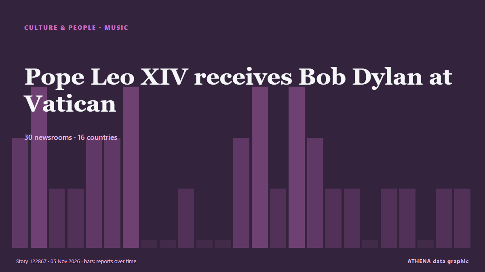

Pope Leo XIV receives Bob Dylan at Vatican

(ANSA) - ROME, 04 NOV - Bob Dylan met Pope Leo XIV at the Vatican Wednesday. von ANSA English
Unabhängig gemeldet von 32 Medien in 17 Ländern seit dem 4. Nov., zuerst von ANSA English; die Berichterstattung flaut ab. Sport und Kultur werden ohne Risikobewertung abgelegt. Die Konfidenz liegt bei 90 % (hoch): 32 Medien bestätigen es unabhängig, bei einer mittleren Verlässlichkeit der Quellen von 74 %. Medien nach Land: Vereinigte Staaten (8), Vereinigtes Königreich (5), Italien (3). Berichterstattung: 4. Nov. bis 6. Nov., 39 Stunden.
Was sich geändert hat: 11 neue Berichte von 11 Redaktionen in den 24 Stunden bis 6. Nov..
Erste Schlagzeile: Bob Dylan meets Pope Leo at the Vatican
Schlagzeilen werden auf Englisch angezeigt, wie veröffentlicht.
Auf einen Blick
Ausgewählt, bewertet und geschrieben nach der veröffentlichten Methodik von ATHENA. Kein Redakteur greift in einzelne Ereignisse ein. So entsteht ATHENA ›
| 04 Nov 16:40 UTC | 5 |
|---|---|
| 04 Nov 18:40 UTC | 2 |
| 04 Nov 20:40 UTC | 4 |
| 04 Nov 22:40 UTC | 3 |
| 05 Nov 00:40 UTC | 1 |
| 05 Nov 02:40 UTC | 0 |
| 05 Nov 04:40 UTC | 5 |
| 05 Nov 06:40 UTC | 4 |
| 05 Nov 08:40 UTC | 3 |
| 05 Nov 10:40 UTC | 1 |
| 05 Nov 12:40 UTC | 2 |
| 05 Nov 14:40 UTC | 1 |
| 05 Nov 16:40 UTC | 1 |
| 05 Nov 18:40 UTC | 0 |
| 05 Nov 20:40 UTC | 0 |
| 05 Nov 22:40 UTC | 0 |
| 06 Nov 00:40 UTC | 0 |
| 06 Nov 02:40 UTC | 0 |
| 06 Nov 04:40 UTC | 0 |
| 06 Nov 06:40 UTC | 1 |
Warum diese Zahlen
Bedeutung
Risiko
Konfidenz
Die Berichterstattung – wer berichtete, und wann
Schlagzeile wie veröffentlicht · öffnet das Original- ANSA English · ItalienBob Dylan meets Pope Leo at the Vatican
- ANSA English · ItalienBob Dylan meets Pope Leo at the Vatican
- Pitchfork news · Vereinigte StaatenBob Dylan, Wearing Hoodie, Meets Pope
- Wanted in Rome (working feed) · ItalienBob Dylan and Pope Leo Swap Gifts at the Vatican
- The Straits Times · SingapurPope receives black-clad musician Bob Dylan at Vatican
- Rolling Stone · Vereinigte StaatenBob Dylan Meets With Pope Leo XIV in a Private Audience
- ABC News (International) · Vereinigte StaatenBob Dylan comes knockin' on pope's door as Leo welcomes legend to Vatican
- Stuff · NeuseelandBob Dylan wore a really strange outfit to meet the Pope
- Bangkok Post — page reader · ThailandPope receives black-clad Bob Dylan
- Free Malaysia Today · MalaysiaPope receives black-clad Bob Dylan
- Billboard · Vereinigte StaatenWith God on Their Side: Bob Dylan & Pope Leo XIV Commune at the Vatican
- PBS NewsHour · Vereinigte StaatenPope Leo XIV welcomes Bob Dylan to the Vatican in a brief visit
- The New York Times (World) · Vereinigte StaatenBob Dylan Meets With Pope Leo
- New Straits Times · Malaysia#SHOWBIZ: Pope receives black-clad Bob Dylan
- BBC News · Vereinigtes KönigreichPope Leo hosts Bob Dylan at official residence in Rome
- Times of India · IndienPope Leo XIV meets Bob Dylan at the Vatican
- Nile Post · UgandaPope Leo hosts Bob Dylan at official residence in Rome
- Financial Times - Markets · Vereinigtes KönigreichEuropean rates go electric!
- eNCA · SüdafrikaPeru, the country that shaped Leo's path to pope
- eNCA · SüdafrikaPope receives black-clad Bob Dylan
- NPR · Vereinigte StaatenBob Dylan comes knockin' on pope's door as Leo welcomes legend to Vatican
- The Business Times · SingapurWhen the American bard met the American pope
- TheJournal.ie · IrlandBob Dylan gives Pope Leo his autobiography during private audience
- Arab Times · KuwaitAfter 'Knockin' on Heaven's Door', Bob Dylan Meets Pope Leo XIV at Vatican
- ProtoThema English ·Bob Dylan meets Pope Leo XIV at the Vatican wearing a hood, united by their opposition to war
- Türkiye Today · TürkeiPope Leo XIV receives Bob Dylan at Vatican
- Evening Standard (London) · Vereinigtes KönigreichBob Dylan presents Pope with copy of autobiography during meeting at Vatican
- BusinessWorld · PhilippinenBob Dylan blows in for meeting with Pope Leo at Vatican
- NME · Vereinigtes KönigreichBob Dylan meets Pope Leo XIV at Vatican (while wearing a hoodie)
- The Independent · Vereinigtes KönigreichThe gifts Bob Dylan and Pope Leo exchanged during their 'brief' meeting at Vatican
- Global News (World) · KanadaBob Dylan meets with Pope Leo XIV at the Vatican
- Billboard · Vereinigte StaatenSix Other Musicians Who’ve Had an Audience With Pope Leo
- to vima · GriechenlandBob Dylan Meets Pope Leo XIV at the Vatican